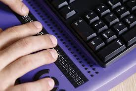

About Limitless IO
At Limitless IO, we believe everyone should have the freedom to communicate and connect, regardless of physical ability. As a nonprofit, we create custom electronic input and output devices for people with disabilities who struggle with traditional hardware, enabling them to engage with technology in empowering new ways.
a historical one-handed keyboard, photo by Michael Hicks
Why We Exist Many individuals with disabilities face barriers when using standard tech. Our mission is to design personalized devices that break those barriers, giving everyone access to technology for expression, learning, and connection.

a more modern braille keyboard, photo by Rosenfield Media
Our Approach We take a person-first approach, developing custom solutions tailored to each user’s needs—whether eye-tracking tech, or voice-activated systems. Each device is crafted to meet the specific challenges and goals of the individual. Community Effort As a nonprofit, Limitless IO is fueled by the generosity of donors and sponsors, allowing us to offer devices at little to no cost for those in need. Together, we’re creating opportunities for all.
About Limitless IO
At Limitless IO, we believe everyone should have the freedom to communicate and connect, regardless of physical ability. As a nonprofit, we create custom electronic input and output devices for people with disabilities who struggle with traditional hardware, enabling them to engage with technology in empowering new ways.